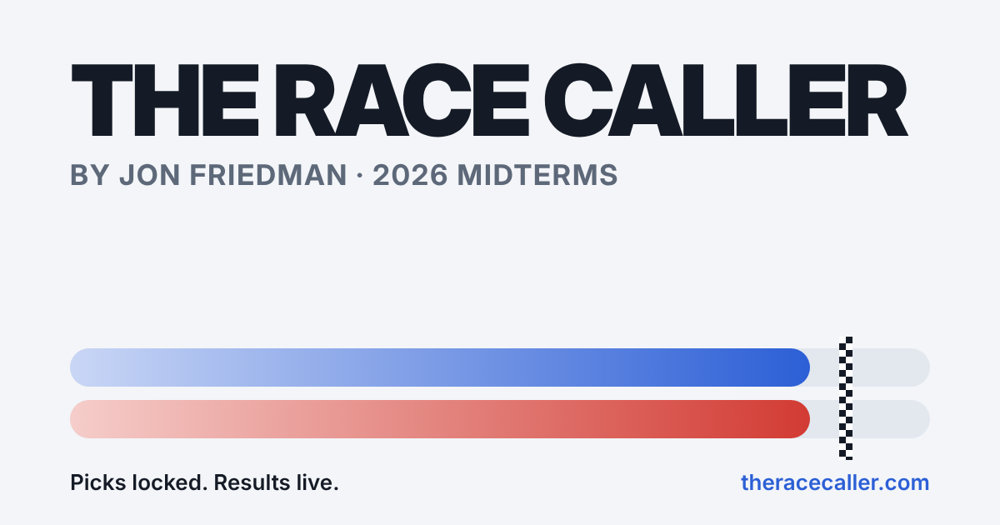

By Jon Friedman · 2026 Midterms
The Race
Caller
Every race on one screen. Ratings, polls, markets and county math, with my picks locked before the polls close.

One screen
Every race, side by side
Ratings from Cook, Inside Elections and Sabato, poll averages, prediction markets and early vote.
What if
The poll-error dial
See how the map changes if this year's polls miss the way they did in 2024, 2022 or 2025.
On the record
Locked picks
A winner picked in every race before polls close, graded in public when the votes are counted.
125races picked
—picks right (after the count)
Liveresults through election night
MTall times in Arizona time